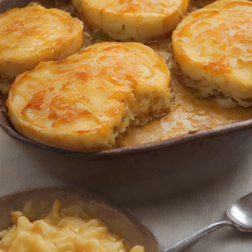

デザート
悪魔のチーズポテトグラタン！サクサクポテトのクリーミーチーズソースで爆発！

サクサクポテトとクリーミーチーズの組み合わせで、衝撃的な美味しさに！悪魔的アレンジレシピで、日常の食卓に革命を起こそう！
💡 こんな時・こんな人におすすめ！
パーティーや特別な日に！
📋 必要な材料（ポストイット風）
材料リスト 1
- じゃがいも2個
- チーズ100g
- バター大さじ2
材料リスト 2
- 牛乳200ml
- パプリカ1/4個
🍳 作り方ステップ
1
じゃがいもを schälen und in 2cm の厚さに切ります。
2
フライパンにバターを入れ、じゃがいもを炒め、塩コショウで味を調え、中火で10分ほど焼きます。
3
チーズ、牛乳、パプリカを加え、弱火で20分ほど煮詰めます。
4
お好みでチーズを乗せて、温かいグラタンとして召し上がってください。